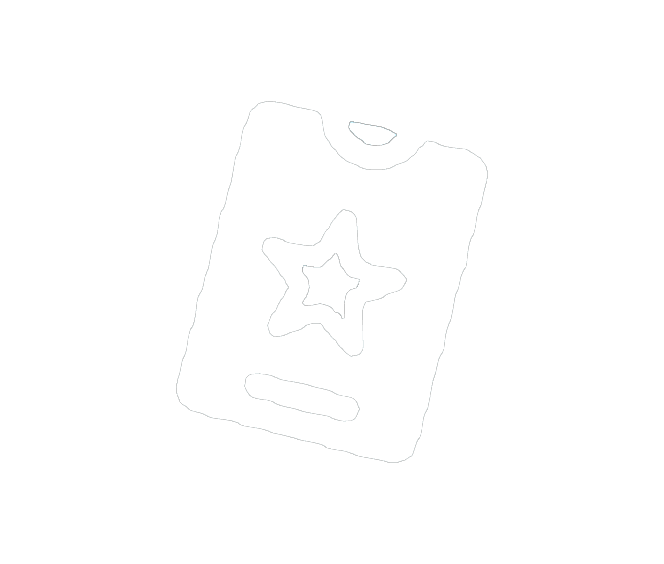

|  | |||||||||
|
Temporada 1 New Beginnings |
Temporada 2 Out of This World |
Temporada 3 Looking Back |
Temporada 4 Epic Adventures |
|---|
|
Temporada 5 Let The Memes Begin |
Temporada 6 Race To The Top |
Temporada 7 Ice Cold |
Temporada 8 Looking To The Future |
|---|
|
Temporada 9 A New Journey |
Temporada 10 Rich and Famous |
Temporada 11 Toys and Collectibles |
Temporada 12 Bring The Military |
|---|
|
Temporada 13 Super Villainous |
|---|